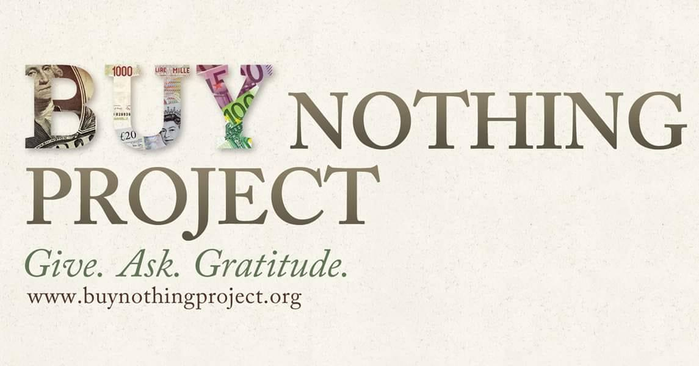
Highly active local groups for community. Rehome items and get to know your community.
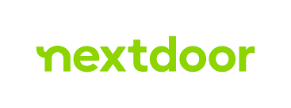
Useful for local, rapid donation or selling.
Online selling/buying platform.
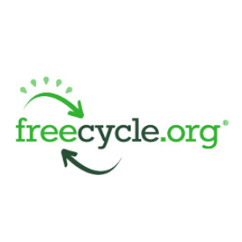
Environmental friendly donations within the community.
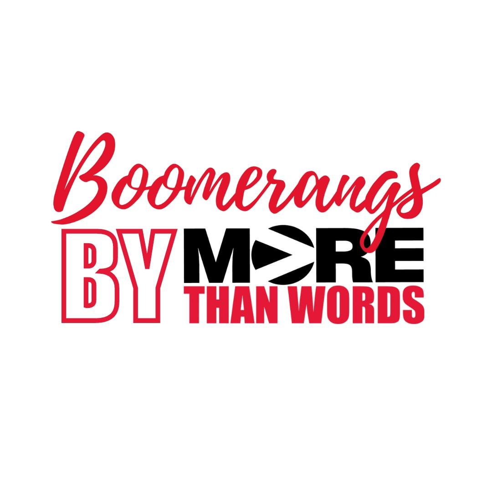
Thrift store empowering at-risk youth by taking charge of business.
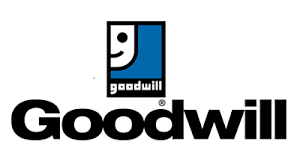
Nonprofit retail thrift center at 520 Massachusetts Ave, Cambridge.
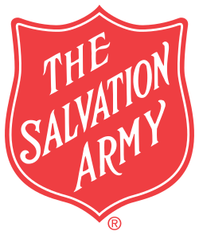
Thrift shops where proceeds fund Adult Rehabilitation Centers.
Providing clothes and essentials to low-income and homeless people in Cambridge.
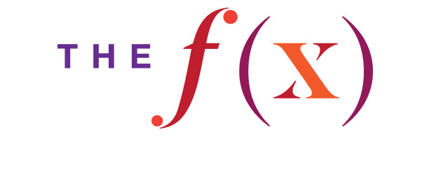
Donate furniture while supporting MIT scholarships.
Open Thursdays 10am-1pm; free items on a first-come, first-served basis.
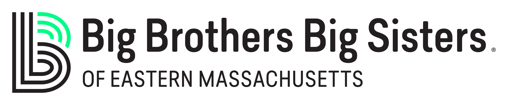
Picks up clothing and small household items right from your door steps.
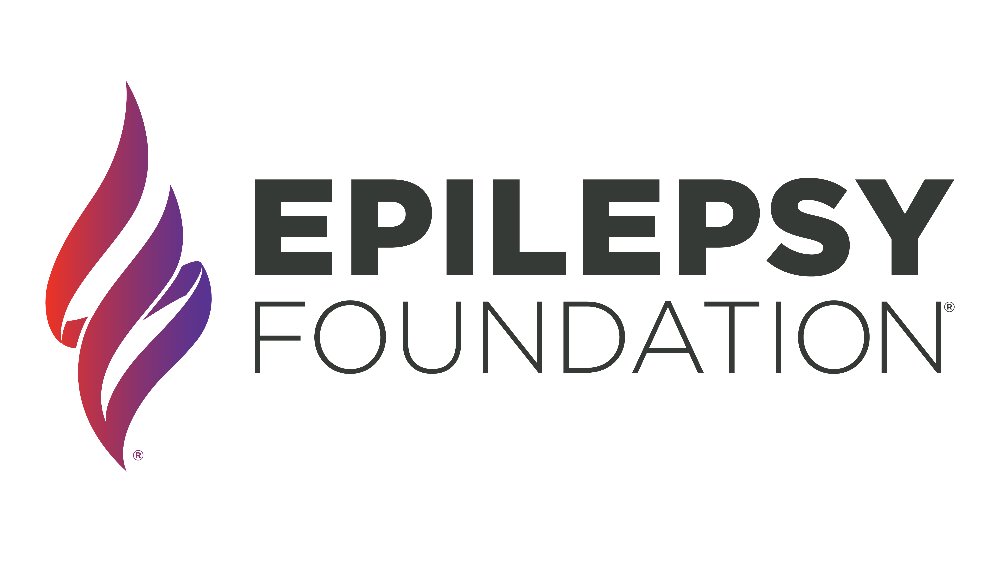
Collects clothing and household goods from curbside.
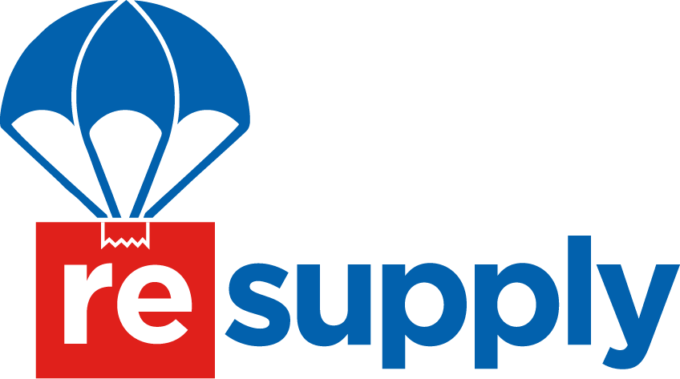
Partners with charities to pick up furniture and bulk items.
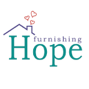
Accepts furniture donation.
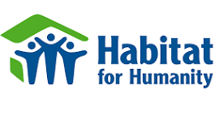
Picks up furniture and building materials from curbside.
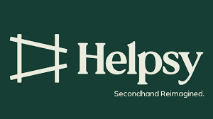
Donate used clothes and shoes in any condition.
E-waste, electronics, books, toys and much more.
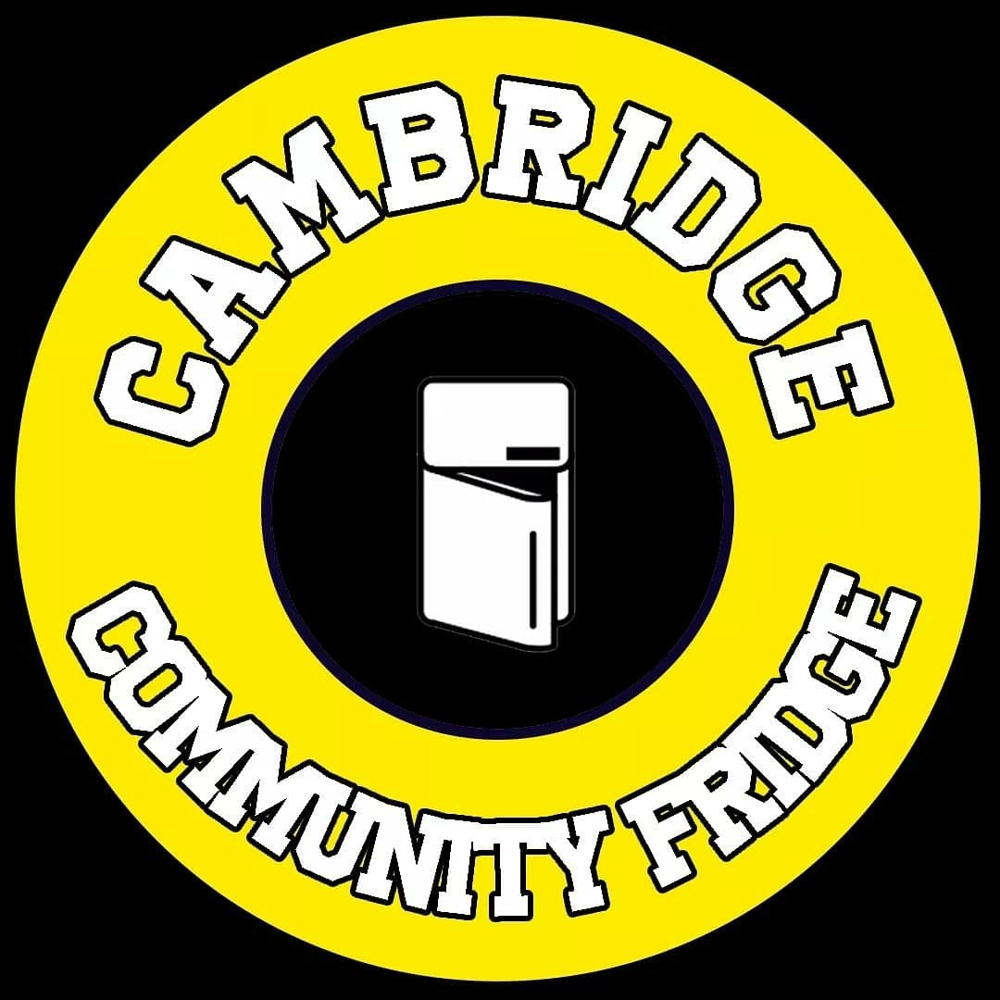
Community driven food fridge. Donate or pickup.
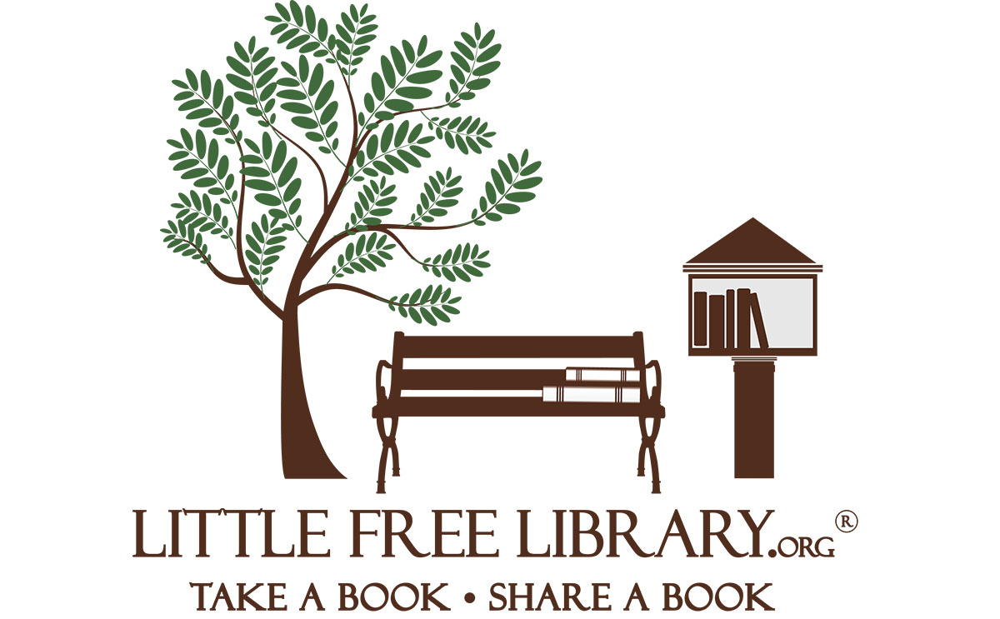
Drop a box, pick a book. All across Cambridge.
For an itemized searchable map of donation sites near Cambridge: